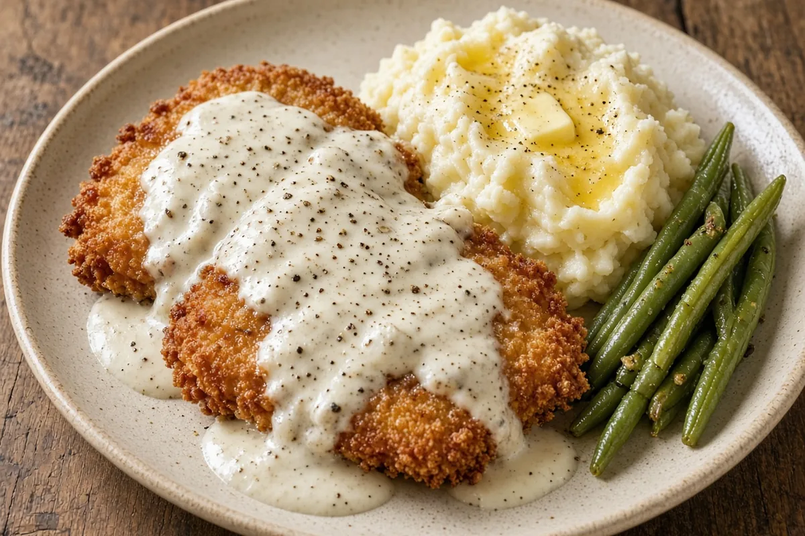

Southern Chicken-Fried Steak with Cream Gravy
Tenderized cube steak in a seasoned crust, fried golden in a HexClad skillet and smothered with black-pepper cream gravy. Start the mashed potatoes first; the whole plate is ready in about 75 minutes.

8 servings
By
Yield: 8 servings
Prep:
Cook:
Total:
Difficulty: Medium
Ingredients
- 3 lb cube steak, extra-tenderized
- 2 tsp kosher salt, plus more to taste
- 1 tsp black pepper, plus more to taste
- 2 cups all-purpose flour, for the dredge
- 2 tsp seasoned salt, for the dredge
- 1 tsp paprika
- 1/4 tsp cayenne pepper
- 1 1/2 cups whole milk, for the egg wash
- 2 large eggs
- 1/2 cup vegetable oil, plus more as needed
- 1 Tbsp butter
- 1/3 cup all-purpose flour, for the gravy
- 3 cups whole milk, for the gravy
- 1/2 tsp seasoned salt, for the gravy
Instructions
- Heat the oven to 200°F and set a wire rack over a sheet pan. Pat the cube steak dry and season both sides with the kosher salt and black pepper.
- In a shallow dish, stir together the 2 cups flour for the dredge, the 2 tsp seasoned salt, the paprika, and the cayenne pepper. In a second dish, whisk the eggs with the 1 1/2 cups milk for the egg wash.
- Dredge each steak in the flour, dip it in the egg wash, then dredge in the flour again, pressing so the coating sticks. Set the steaks on the rack and let them rest 5 minutes so the crust sets.
- Heat the vegetable oil and butter in a large HexClad skillet over medium-high heat until the oil shimmers. Fry the steaks in batches, 3 to 4 minutes per side, until the crust is deep golden. Do not crowd the pan. Add a splash more oil between batches if the skillet looks dry. Keep the fried steaks on the rack in the oven. The steaks are done when the crust is well browned and a thermometer in the thickest part reads at least 145°F; they cook quickly, so pull them as soon as the crust is ready so they stay tender. If a batch looks pale, give it 1 more minute per side.
- Pour off all but about 1/3 cup of the drippings, leaving the browned bits in the HexClad skillet. Set the skillet over medium heat, whisk in the 1/3 cup flour for the gravy, and cook 1 minute, until it smells toasty.
- Slowly whisk in the 3 cups milk for the gravy. Simmer, whisking, until the gravy is smooth and thick enough to coat a spoon, 4 to 6 minutes. Season with the 1/2 tsp seasoned salt and a generous grind of black pepper. If it gets too thick, whisk in a splash of milk; if it is thin, simmer 1 to 2 minutes more.
- Spoon the cream gravy over the steaks and serve right away.
Notes: Start Delicious, Creamy Mashed Potatoes first (they take 1 hour 15 minutes), then fry the steaks during the potato boil and bake. Buttery Garlic Green Beans take about 17 minutes and can go on at the end. A 12-inch HexClad skillet holds 2 to 3 steaks per batch; plan on 2 or 3 batches for 3 lb.